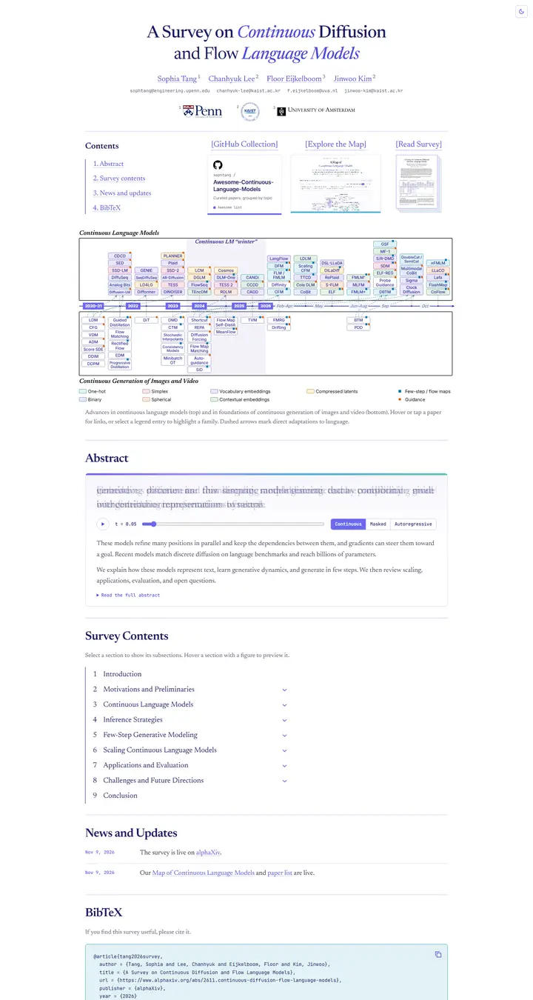

A Survey on Continuous Diffusion and Flow Language Models
A transit map pinned under a scholarly masthead, with a navy Newsreader title and violet italic words above a wall of pastel model cards strung along an indigo timeline track.

Checked against the rendered page. At 375px the 34px theme toggle overlaps the end of the title's first line by 7px. The 12px news dates in #6b67ee reach only 4.38:1 contrast on white and 4.34:1 on the dark page.
Why it is here
Added on the maintainer's suggestion rather than through the design rounds. The page is for a survey preprint on alphaXiv, so it sits outside the venue rules and was not judged in the rounds. It pairs a navy serif masthead and bracketed resource previews with a hoverable timeline of 92 pastel model cards and an abstract whose first sentence resolves from noise as you drag a slider.
Overview
Color Palette
Typography
Spacing & Shape
Page Modules
Guidelines
More like this